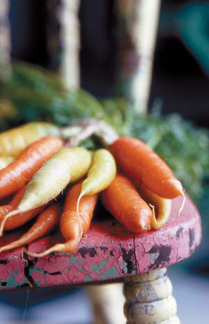

Carrots are such a popular vegetable that you probably have some chilling in your refrigerator right now - but have you tried growing them in your garden? Growing carrots is easy as long as you understand what the plants need; once you do, you’ll have the pleasure of eating better-tasting carrots than you can buy at the supermarket. Some of the highest-quality carrots have delicate tops and roots that make them unsuitable for mechanical harvesting and shipping. Plus, they’re so easy to store that you can eat homegrown carrots year-round.
One of your first decisions will be which varieties to plant, and choosing is an adventure in itself. Carrots come in a range of shapes and sizes, and you can try a variety of colors: orange, yellow, white, red or purple.
There are strong links between the color of carrots and their nutritional content. Five hundred years ago most carrots were white. Sixteenth-century Dutch breeders created the orange version, quadrupling the vegetable’s beta carotene, which the human body converts to vitamin A. More recently, carrot breeders have increased lycopene content, which is tied to a red root color. Like the lycopene compounds in ‘Nutri-Red’ and other red carrots, the anthocyanin pigments in ‘Dragon,’‘Purple Haze’ and other purple carrots do double duty as antioxidants, which help prevent cancer and slow the effects of aging. White ‘Kuttiger’ and yellow ‘Yellowstone’ carrots look stunning when combined with orange, red or purple carrots, but nutritionally they rank far below their more colorful counterparts.
Light-colored carrots tend to have a crisp, juicy texture, whereas red carrots taste slightly starchy. Purple carrots often are surprisingly spicy, and both red and purple carrots contain fewer natural sugars than orange carrots, which are the second sweetest of all vegetables, surpassed only by beets.
Many gardeners are learning about these flavor differences firsthand. “There is definitely a trend toward colorful carrots,” says Josh Kirschenbaum, product developer at Territorial Seed Co. in Cottage Grove, Ore. “They look beautiful on a plate, and you get nutritional variation as well.”
John Navazio, the director of research and education at Organic Seed Alliance, enjoys using white carrots in soups and stews, because “they are stronger-tasting and impart a wonderful, spicy, salsify-like flavor.” Navazio - who holds a doctorate in plant breeding and genetics - regards ‘Red Core Chantenay’ as one of his favorites, because it is a “full-flavored variety with true carrot flavor, or a balance of sweet and savory.” Navazio also recommends ‘Scarlet Nantes,’ a “good, sweet carrot with lots of character and enough flavor complexity to taste like a carrot,” and he thinks the best seed stock for these varieties is from Wood Prairie Farm (www.woodprairie.com).
In addition to the benefits of varied color and nutrition, most gardeners agree the best-tasting carrots are the ones you pull, wash and eat straight from the garden.
If you want your garden to produce the best carrots you’ve ever eaten, don’t be so taken by unusual colors that you overlook a more important issue - matching your variety choice to the season and to the soil type in your garden. Cool soil temperatures bring out the best in any carrot’s flavor and texture, so the best strategy is to begin the spring planting season with a variety that matures quickly - before hot summer weather arrives - such as a variety from the Nantes group (see “Eat Fresh Carrots All Year”). Then sow a slower-growing Chantenay type in summer to harvest after soil temperatures have cooled in the fall.
To grow great carrots you’ll need great soil. The best soil for carrots has fine particles with a porous, loamy texture. To cultivate your carrot bed, remove any rocks and sticky clods of dirt. (In order to safeguard the soil’s structure, always do this when the soil is dry.)
Carrots need a nice balance of nutrients, yet when you give them too much nitrogen - particularly not-quite-decomposed manure - the roots are more likely to fork, crack or grow too slowly. Ideally, you should prepare your carrot bed in the fall by mixing in plenty of your best compost, along with some lime if you need to lower your soil’s acidity to the near-neutral range. Another way to prepare your carrot bed is to lace it with earthworm castings. Numerous backyard experiments have demonstrated dramatic improvements in carrot growth when the soil contains 10 percent to 20 percent worm castings. Compost from heaps heavily populated by earthworms is ideal, or you can purchase worm castings in products labeled as vermicompost.
Carrot seeds have a well-deserved reputation for being slow sprouters. Compared to other vegetable seeds, the embryos within carrot seeds are quite tiny. Before a carrot seed can sprout, it must soak up water so the embryo can grow. Chemicals in the seed coat delay germination, giving the embryo adequate time for growth, and even under perfect conditions (soil temperatures from 60 to 70 degrees and constant light moisture), carrot seeds seldom sprout in less than seven days. Don’t rush to plant carrots too early in spring, because exposure to temperatures below 50 degrees slows germination and increases the likelihood that the plants will develop a flower stalk. Once this happens, the root rapidly becomes tough and woody.
Many weeds germinate faster than carrots. In order to prevent weeds from taking over the carrot bed, some gardeners cover carrot seeds with weed-free potting soil rather than garden soil. Additionally, potting soil will not form a dry crust over the germinating seeds. Another trick that’s especially useful in spring is to stud the carrot row with radishes, which sprout quickly and help shade the soil over germinating carrot seeds.
As long as the soil is kept moist, spring sowings usually sprout within 10 days, but in summer you probably will need a shade cover to keep the sun from drying out the soil. An old blanket, a double thickness of burlap or a cardboard box held in place with bricks will work. Check beneath the shade cover daily to see if you need to sprinkle on a bit more water, and remove it altogether after five or six days. Many market gardeners, such as Charlotte Swancy of Riverview Farms in Ranger, Ga., find that pelleted seeds, which are coated with fine clay, are easier to coax out of the ground in summer, making them worth their extra cost.
Swancy uses drip irrigation to keep her summer-to-fall carrots from going thirsty, and any type of watering is more effective when carrots are mulched. Besides helping to retain soil moisture, several thin layers of fine-textured grass clippings or a 1-inch-deep blanket of composted leaves (or other weed-free mulch) will deter weeds, help cool the soil and keep growing carrots from getting green shoulders - a common side effect seen when the roots swell and push up toward the sun. Carrots exposed to significant fluctuations in soil moisture also tend to crack, and cracked carrots don’t store as well as perfect ones.
If you dream of perfect rows of evenly spaced carrots, begin by sorting through your seeds and picking out the largest ones (large seeds produce big, sturdy sprouts). Then lay a piece of chicken wire on the ground to use as a grid, and place seeds exactly where you want them to grow. If you want both baby carrots and heavy-rooted mature specimens, space seeds 2 inches apart, and pull every other one when a few samples show roots with good color that are wider than a pencil - that’s your baby carrot crop. Then pull or dig the mature carrots when they are ready. Carrots often are less uniform in size and color than other vegetables, so it’s best to start harvesting them based on what you see (and taste) when you pull a few samples.
It’s fun to use a carrot’s feathery leaves as a handle while you’re munching it, but it’s best to cut them off as soon as you harvest your carrots. If you don’t, the leaves will draw moisture away from the roots. Even under refrigeration, carrots that hold their tops quickly become limp. Carrot bunches at the supermarket have trimmed tops, so that only enough leaves remain to hold the bunch together.
Some lucky gardeners are able to leave their mature carrots in the ground and harvest them as needed. But for most of us, the safest place to store carrots is in the refrigerator. Critters roaming through your garden often stop to take a few bites from overwintering carrots, and several weevils and other insects can sabotage crops that are left in the soil too long. Carrots that are dug, trimmed of their tops, washed and patted dry before being placed in plastic bags in the refrigerator will keep for several months. When they begin to shrivel or sprout, you have a great excuse for making a delicious cinnamon-spiced carrot cake.
“Baby-cut” carrots were invented 20 years ago as a way to use broken carrot pieces. Their introduction helped double carrot consumption during the 1990s, and baby-cut carrots are so popular that breeders have developed varieties designed to be sculpted into three perfect pieces. Baby-cut carrots taste sweet in part because they are made from mature carrots.
True baby carrots - or immature carrots - have a delicate texture, but because carrot flavor reaches its peak just as the roots reach full size, immature carrots often taste bland or slightly bitter. To grow the best-tasting baby carrots in your garden, stick with the miniature varieties or try varieties that develop good flavor while they are still small, such as the hybrid ‘Little Finger.’
“Carrots are really easy to save seeds from,” says Betsy Bruneau, co-manager at Bountiful Gardens in Willits, Calif. Carrots are biennials, which means they flower and produce seed in their second year. “In mild winter areas you can leave carrots in the ground over the winter and they will flower the following spring,” Bruneau says. “In other areas, dig the carrots up before the first hard freeze and keep them in the refrigerator until early spring. Then replant them; they will go to seed in the summer. If you buy some nonhybrid carrots at the farmer’s market that you really like, you can stick them in the ground and save seeds from them, too.”
Bruneau cautions against allowing Queen Anne’s lace (wild carrot) to bloom within a half mile of carrots being grown for seed, because bees and other flying insects will eagerly spread pollen between the cultivated and wild forms, rendering the carrot seeds worthless. Different cultivated carrot varieties also cross-pollinate. Plan to save the seeds borne by the first big umbel - the stalk and cluster of flowers in the shape of an umbrella - that appears on each plant, because the primary umbel will produce bigger seeds than flower clusters that appear later. Allow the seed-bearing umbel to ripen on the plant until the outermost seeds turn brown, then cut it off close to the ground and hang it upside down in a dry, well-ventilated room for two weeks. Collect the ripe seeds by crushing the dried umbel inside a paper bag. Discard the smallest seeds and save the biggest ones for replanting. Meanwhile, any flowers not collected for seed will serve as nectar sources for beneficial insects, or you can enjoy them as cut flowers indoors.
By choosing the right varieties and making spring and summer sowings, you can eat fresh carrots year-round. You’ll be able to harvest carrots as you need them, let some overwinter in the ground and always have some in the refrigerator that are washed and ready to eat.
North American carrots are classified into five major categories (see chart), based on the shape of their roots. There is plenty of crossover between categories (for example, Nantes-Imperator types), but these general classifications are useful for choosing varieties based on the type of soil in your garden and the season in which you plan to grow them.
Nantes: straight, cylindrical roots 5 to 7 inches long; sweet flavor and crisp texture;
limited storage potential
Varieties:‘Early Nantes’ (OP*), ‘Nelson’ (F1*), ‘Mokum’ (F1)
Season: spring to early summer, late summer to fall
Soil: loose, sandy soil or raised beds enriched with organic matter
Days to Maturity: 55 to 70 in spring, 60 to 75 in fall
Chantenay: conical roots with broad shoulders and rounded tips; rich, sweet flavor and good storage potential
Varieties:‘Red Core Chantenay’ (OP), ‘Kuttiger’ (OP), ‘Kurota’ (OP)
Season: spring to early summer, midsummer to late fall
Soil: best varieties for clay soil, or any fertile loam
Days to Maturity: 55 to 70 in spring; 70 to 110 in fall
Imperator: long, tapered roots with stocky shoulders and strong tops; slightly fibrous texture; stores well
Varieties:‘Yellowstone’ (OP), ‘Purple Haze’ (F1), ‘Sugarsnax’ (F1)
Season: spring to summer in cool climates, or summer to fall
Soil: requires deep, sandy loam
Days to Maturity: 55 to 100 in spring, 80 to 110 in fall
Danvers: thick-rooted cylindrical shape, often with yellowish core; widely used in
processing; stores well and good for juicing
Varieties: ‘Danvers’ (OP), ‘Healthmaster’ (F1), ‘Danvers Half Long’ (OP)
Season: spring to summer in cool climates, or summer to fall
Soil: deep, sandy loam or raised beds
Days to Maturity: 70 to 80 in spring, 80 to 110 in fall
Miniature & Baby: round, cylindrical or tapered roots less than 5 inches long; crisp
texture and frequently quite sweet; limited storage potential
Varieties:‘Thumbelina’ (OP), ‘Little Finger’ (OP), ‘Parmex’ (OP)
Season: spring to early summer, late summer to fall
Soil: any fertile soil that drains well
Days to Maturity: 50 to 60 in spring, 60 to 70 in fall
*OP = Nonhybrid, seed can be saved; F1 = hybrid, seed cannot be saved
(Continue reading "The Carrot Grower's Art")
For an interesting mix of flavors, try using different colors and varieties of carrots in this recipe. And once you’ve eaten all the carrots, you can use the pickling liquid as a salad dressing or marinade.
1/3 cup sugar
1/2 cup rice vinegar
1/2 cup water
1/4 teaspoon salt
3 cups carrots, peeled and cut into bite-sized pieces
One 2-inch piece of fresh ginger, sliced into 1/4-inch-thick pieces
In a medium saucepan, bring the sugar, vinegar, water and salt to a slow boil. Add the carrots and ginger, cover and simmer until crisp-tender, about 4 minutes. Transfer to a container with a lid and chill at least 2 hours. The pickled carrots will keep for up to a week.
*Bountiful Gardens
Willits, Calif.
(707) 459-6410
www.bountifulgardens.org
*Johnny’s Selected Seeds
Winslow, Maine
(877) 564-6697
www.johnnyseeds.com
Seeds of Change
Henderson, Nev.
(888) 762-7333
www.seedsofchange.com
Territorial Seed Co.
Cottage Grove, Ore.
(800) 626-0866
www.territorial-seed.com
Wood Prairie Farm
Bridgewater, Maine
(800) 829-9765
www.woodprairie.com
*These companies offer mixed, or rainbow, packets of carrot seeds, which make it easy to grow a variety of colors from just one purchase.
Contributing editor Barbara Pleasant is experimenting with yellow carrots in her North Carolina garden. You can track their progress at www.barbarapleasant.com.
|
William Adams ‘BetaSweet’ purple carrots |
David Cavagnaro ‘Red Core Chantenay’ orange carrots |
Territorial Seed Co. ‘Kuttiger’ white carrots |
|
William Adams ‘Sweet Sunshine’ carrots |
David Cavagnaro By planting several varieties of carrots, you’ll enjoy a multicolored harvest and benefit from each variety’s different nutrients. |
 Lynn Karlin ‘Kinbi’ (yellow) and ‘Nelson’ (orange) carrots |
|
Bernard Laws Among North American varieties, there are five major types of carrots based on root shape. |
David Cavagnaro Carrots are biennials, so they usually don’t flower and set seed until their second season. |
Barbara Pleasant You don’t have to be a seed saver to enjoy the beautiful blooms of carrots. |
|
David Cavagnaro If you’d like to grow some deliciously sweet carrots, try the miniature ‘Thumbelina.’ |
Walter Chandoha Royal Chantenay’ carrots are supersweet and a perfect size for snacking. |
Barbara Pleasant Pickled Carrots with Ginger |